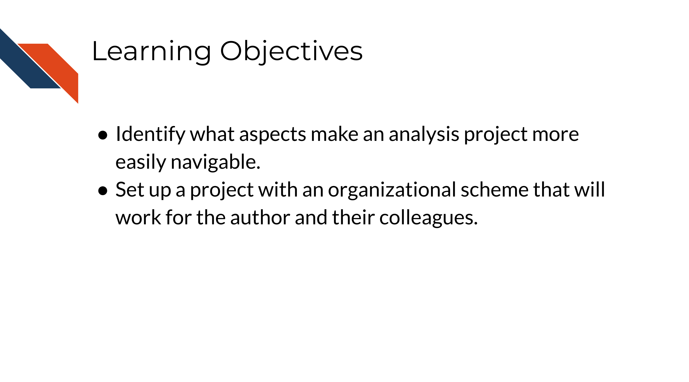
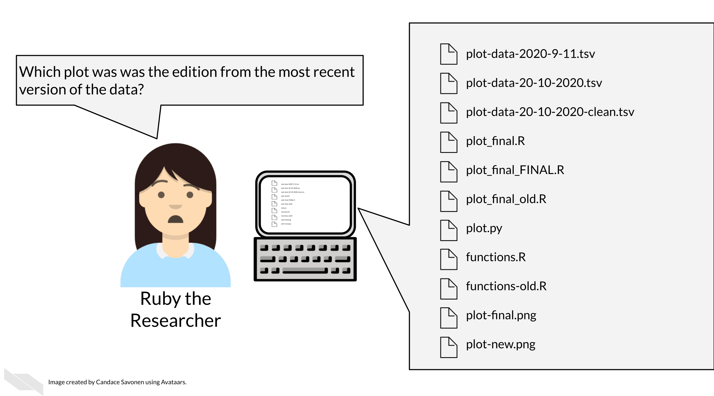
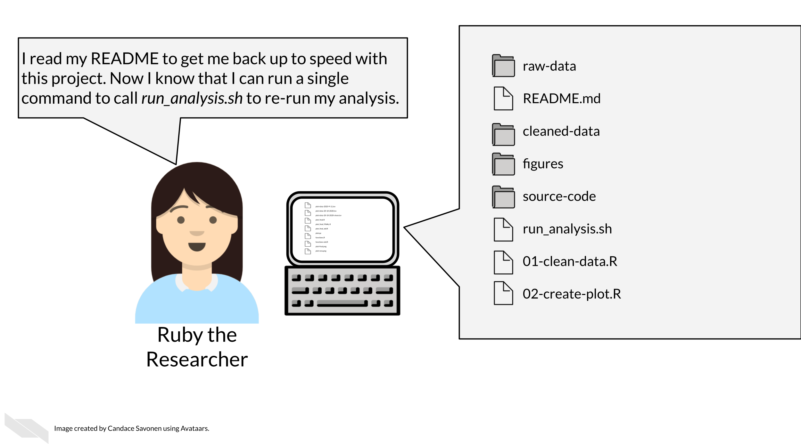

Chapter 10 Organizing your project
In this section we will cover the following learning objectives:

Keeping your files organized is a skill that has a high long-term payoff and also assists in helping make your research transparent and reproducible. During the initial development of an analysis, you may underestimate how many files and terms you have floating around. But a short time later, you may return to your files and realize your organization was not as clear as you hoped.

Tayo (2019) discusses four particular reasons why it is important to organize your project:
- Organization increases productivity. If a project is well organized, with everything placed in one directory, it makes it easier to avoid wasting time searching for project files such as datasets, codes, output files, and so on.
- A well-organized project helps you to keep and maintain a record of your ongoing and completed data science projects.
- Completed data science projects could be used for building future models. If you have to solve a similar problem in the future, you can use the same code with slight modifications.
- A well-organized project can easily be understood by other [researchers] when shared on platforms such as Github.
Organization is yet another aspect of reproducibility that saves you and your colleagues time!

10.1 Organizational strategies
There’s a lot of ways to keep your files organized, and there’s not a “one size fits all” organizational solution (Shapiro et al. 2021). In this chapter, we will discuss some generalities but as far as specifics we will point you to others who have written about works for them and advise that you use them as inspiration to figure out a strategy that works for you and your team.
The most important aspects of your project organization scheme are that it:
- Is project-oriented (Bryan 2017).
- Follows consistent patterns (Shapiro et al. 2021).
- Is easy for you and others to find the files you need quickly (Shapiro et al. 2021).
- Minimizes the likelihood for errors (like writing over files accidentally) (Shapiro et al. 2021).
- Is something maintainable (Shapiro et al. 2021)!
10.1.1 Tips for organizing your project:
Getting more specific, here’s some ideas of how to organize your project:
- Make file names informative to those who don’t have knowledge of the project. Avoid using spaces, quotes, or unusual characters in your filenames and folders – these only serve to make reading in files a nightmare in some programs.
- Number scripts/experiments in the order that they are run.
- Keep like-files together in their own directory: results tables with other results tables, etc. Including most importantly keeping raw data separate from processed data or other results!
- Put raw data, processed data, scripts and functions in their own directories. Be sure to leave raw data and other source information alone, as they should never need to be changed directly by yourself or anyone else.
- Put output in its own directories like
resultsandplots. - Have a central document (like a README) that describes the basic information about the analysis and how to re-run it.
- Make a central script that re-runs everything – including the creation of the folders! (more on this in a later chapter)
Let’s see what these principles might look like put into practice.
10.1.1.1 Example organizational scheme
Here’s an example of what this might look like:
project-name/
├── run_analysis.sh
├── 00-download-data.sh
├── 01-make-heatmap.Rmd
├── README.md
├── plots/
│ └── project-name-heatmap.png
├── results/
│ └── top_gene_results.tsv
├── raw-data/
│ ├── project-name-raw.tsv
│ └── project-name-metadata.tsv
├── processed-data/
│ ├── project-name-quantile-normalized.tsv
└── util/
├── plotting-functions.R
└── data-wrangling-functions.RWhat these hypothetical files and folders contain:
run_analysis.sh- A central script that runs everything again00-download-data.sh- The script that needs to be run first and is called by run_analysis.sh01-make-heatmap.Rmd- The script that needs to be run second and is also called by run_analysis.shREADME.md- The document that has the information that will orient someone to this project, we’ll discuss more about how to create a helpful README in an upcoming chapter.plots- A folder of plots and resulting imagesresults- A folder of resultsraw-data- Data files as they first arrive and nothing has been done to them yet.processed-data- Data that have been modified from the raw in some way.util- A folder of utilities that never needs to be called or touched directly unless troubleshooting something
10.2 Readings about organizational strategies for data science projects:
But you don’t have to take my organizational strategy, there are lots of ideas out there. You can read through some of these articles to think about what kind of organizational strategy might work for you and your team:
- Jenny Bryan’s organizational strategies (Bryan and Hester 2021).
- Danielle Navarro’s organizational strategies Navarro (2021)
- Jenny Bryan on Project-oriented workflows(Bryan 2017).
- Data Carpentry mini-course about organizing projects (“Project Organization and Management for Genomics” 2021).
- Andrew Severin’s strategy for organization (Severin 2021).
- A BioStars thread where many individuals share their own organizational strategies (“How Do You Manage Your Files & Directories for Your Projects?” 2010).
- Data Carpentry course chapter about getting organized (“Introduction to the Command Line for Genomics” 2019).
10.3 Get the exercise project files (or continue with the files you used in the previous chapter)
Get the Python project example files
Now double click your chapter zip file to unzip. For Windows you may have to follow these instructions.
Get the R project example files
Now double click your chapter zip file to unzip. For Windows you may have to follow these instructions.
10.4 Exercise: Organize your project!
Using your computer’s GUI (drag, drop, and clicking), organize the files that are part of this project.
- Organized these files using an organizational scheme similar to what is described above.
- Create folders like
plots,results, anddatafolder. Note thataggregated_metadata.jsonandLICENSE.TXTalso belong in thedatafolder. - You will want to delete any files that say “OLD”. Keeping multiple versions of your scripts around is a recipe for mistakes and confusion. In the advanced course we will discuss how to use version control to help you track this more elegantly.
Any feedback you have regarding this exercise is greatly appreciated; you can fill out this form!
In summary, having a plan for how to organize your data from the very beginning can really help keep your scientific process smooth. We recommend having a different folder for your raw data that goes untouched. Keeping any analysis code organized can also help you keep track of your process and share your work with others.